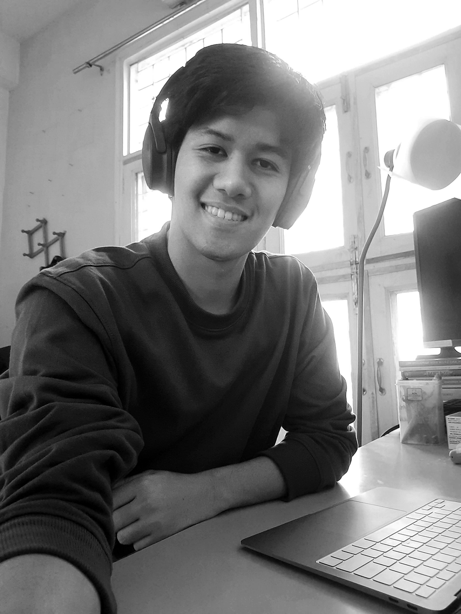

Hi! I'm Isal.
I like building human-centered spaces considering experience, function, and ergonomics.
This website showcases some of my past projects with material installations, product design and computer graphics.
Feel free to snoop around.
Say hi! at shuklaisal@gmail.com
Exhibitions and Shows
- “Mystical Confluence” Art Exhibition at Chandigarh Lalit Kala Akademi — Exhibition Design, 2025
- Bandhej, Ahmedabad Clothing Showroom — Lighting Design
- Exhibition Design Kiosk at Design Street, ID Ahmedabad, 2022 — Lead Designer and Execution
- Presenter at the Media Project Show, Sommertheatre at TH OWL, Germany, 2023
- “Strawberry Fields Forever” Scenography Show, 2022 by EDUG20
- “In Translation”, Design Project Exhibition, 2021 by EDUG20
- Visual Arts “Susceptibility of the human mind”, 2019
Resume